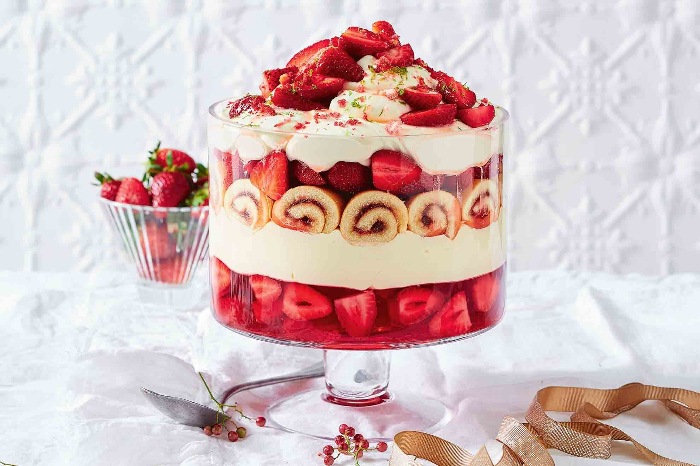

Strawberry Trifle

Description
Looking for something fun and festive to wow the crowd? You can't beat this cocktail twist on the classic trifle.
Ingredients
- 2 x 85 packets strawberry jelly
- 625g strawberries, hulled, sliced
- 2/3 cup caster sugar
- 2 tbsp lime juice
- 1/3 cup white rum
- 600ml thickened cream
- 1/2 x 900g tub double thick vanilla custard
- 2 x 250g packets mini jam sponge rolls, cut into 1cm-thick slices
- 1 tbsp finely grated lime rind
- Freeze-dried strawberries, crushed, to serve
Steps
- Prepare jelly following packet directions. Pour into a 4-litre-capacity glass trifle dish. Refrigerate for 2 hours or until just beginning to set (mixture should have a thick, syrupy consistency). Stir in 250g of the strawberries. Refrigerate for 4 hours or until set.
- Meanwhile, combine 1/2 cup sugar and 1/4 cup water in a small saucepan over low heat. Cook, stirring, for 5 minutes or until sugar has dissolved. Increase heat to high. Bring to the boil. Boil, without stirring, for 5 minutes or until mixture thickens. Stir in lime juice and 1/4 cup rum.
- Transfer 1/3 cup rum syrup to a small heatproof bowl. Set aside for 30 minutes to cool. Add 250g of remaining strawberries. Stir to coat. Cover. Refrigerate until required. Set remaining rum syrup aside.
- Using an electric mixer, beat 1 cup cream, until just-firm peaks form. Fold in custard. Spoon custard mixture over jelly mixture. Using picture as a guide, arrange jam rolls over custard mixture. Drizzle with remaining rum syrup. Place remaining strawberries over sponge rolls. Cover. Refrigerate for 4 hours.
- Using electric mixer, beat remaining cream, sugar and rum until soft peaks form. Add half the lime rind. Beat until just-firm peaks form.
- Dollop cream mixture on top of trifle. Spoon over strawberry syrup mixture. Sprinkle with freeze-dried strawberries and remaining lime rind. Serve.